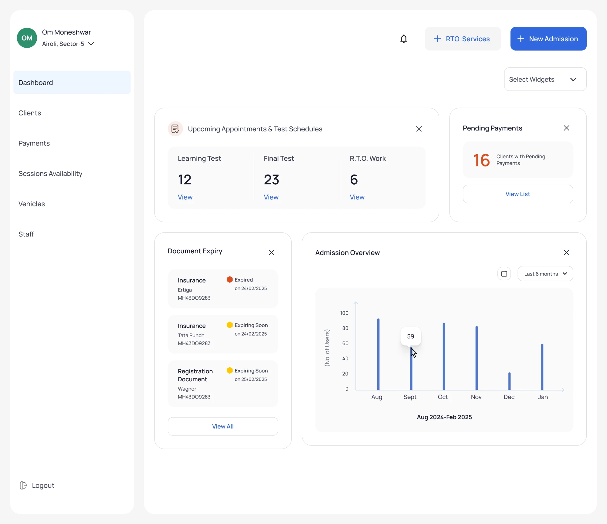
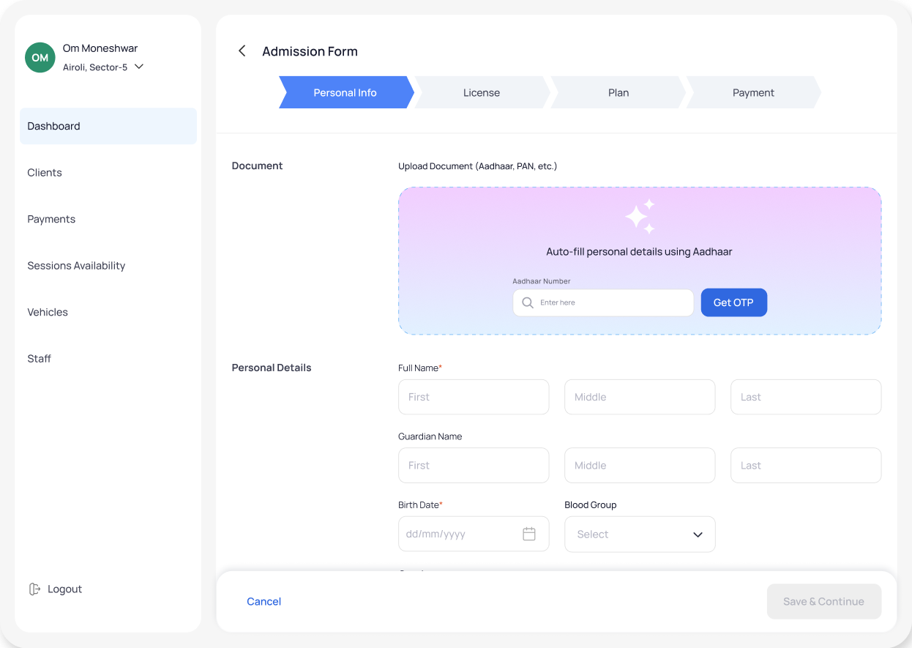
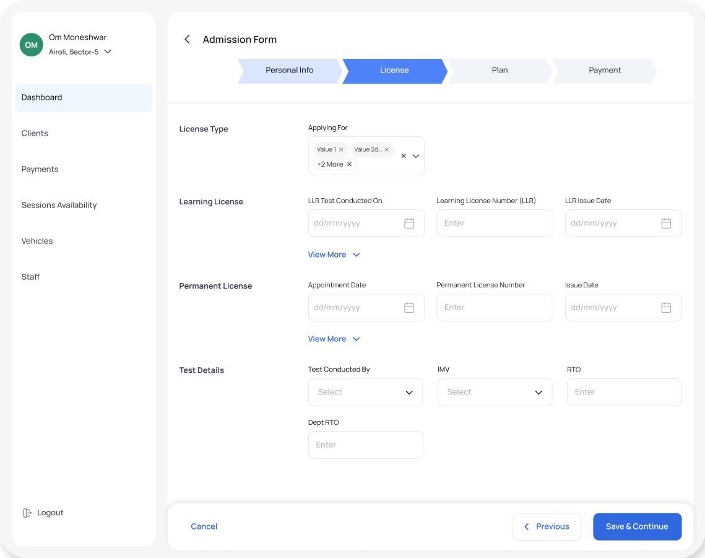
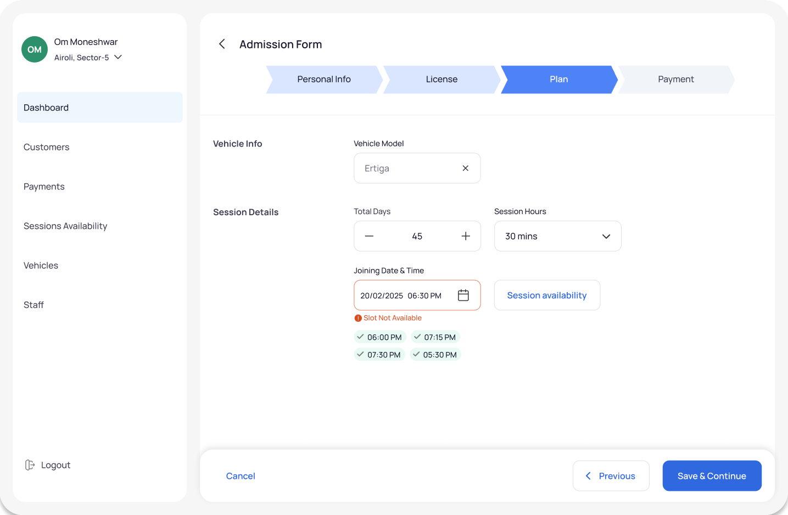
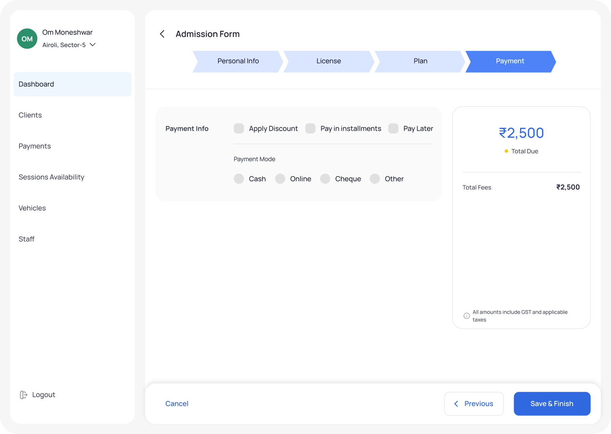
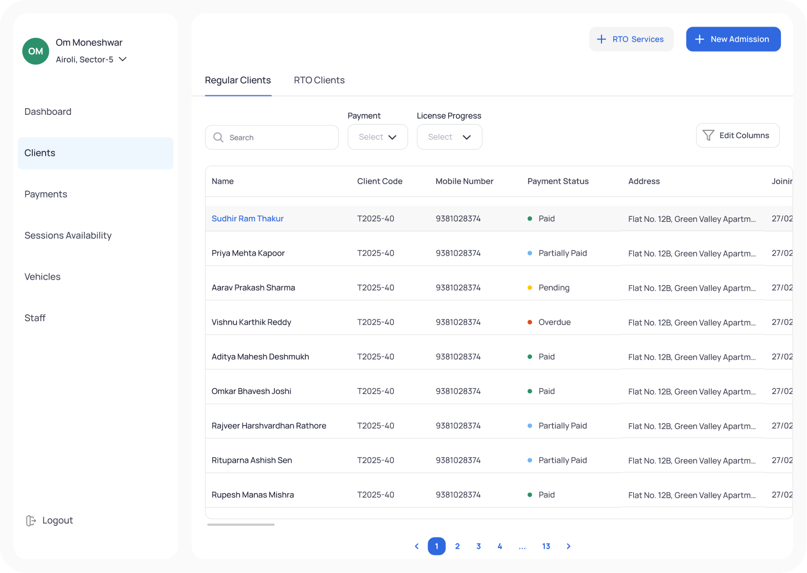
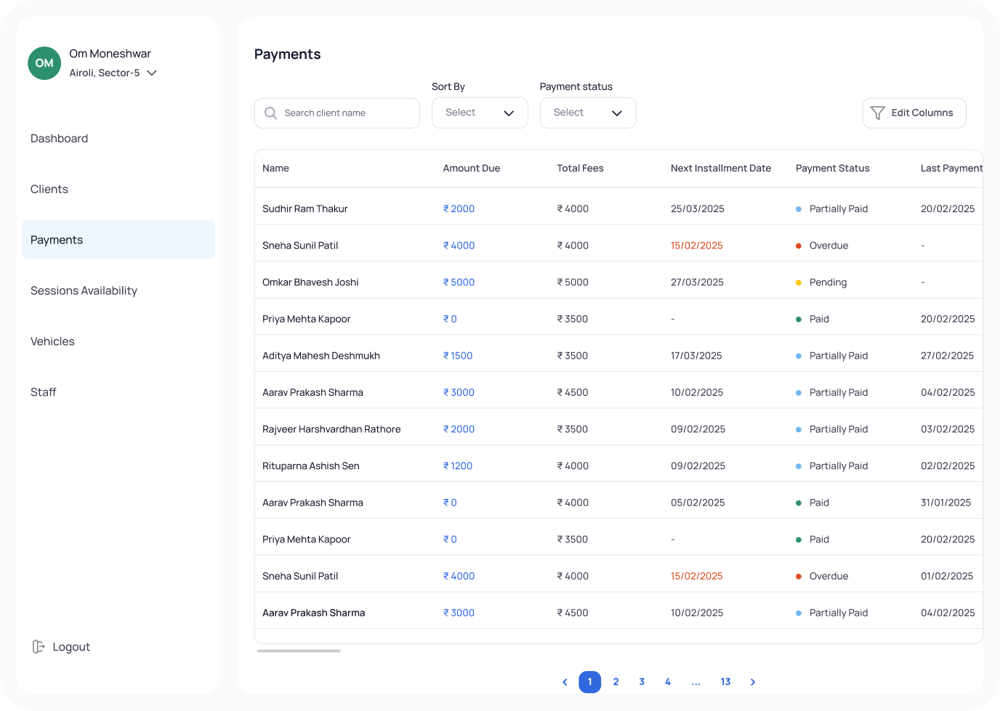
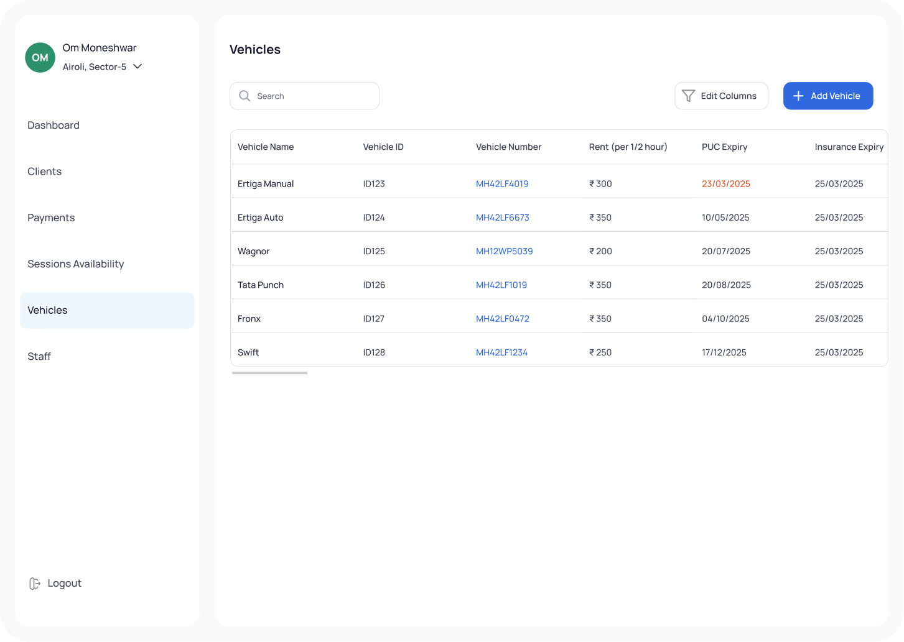
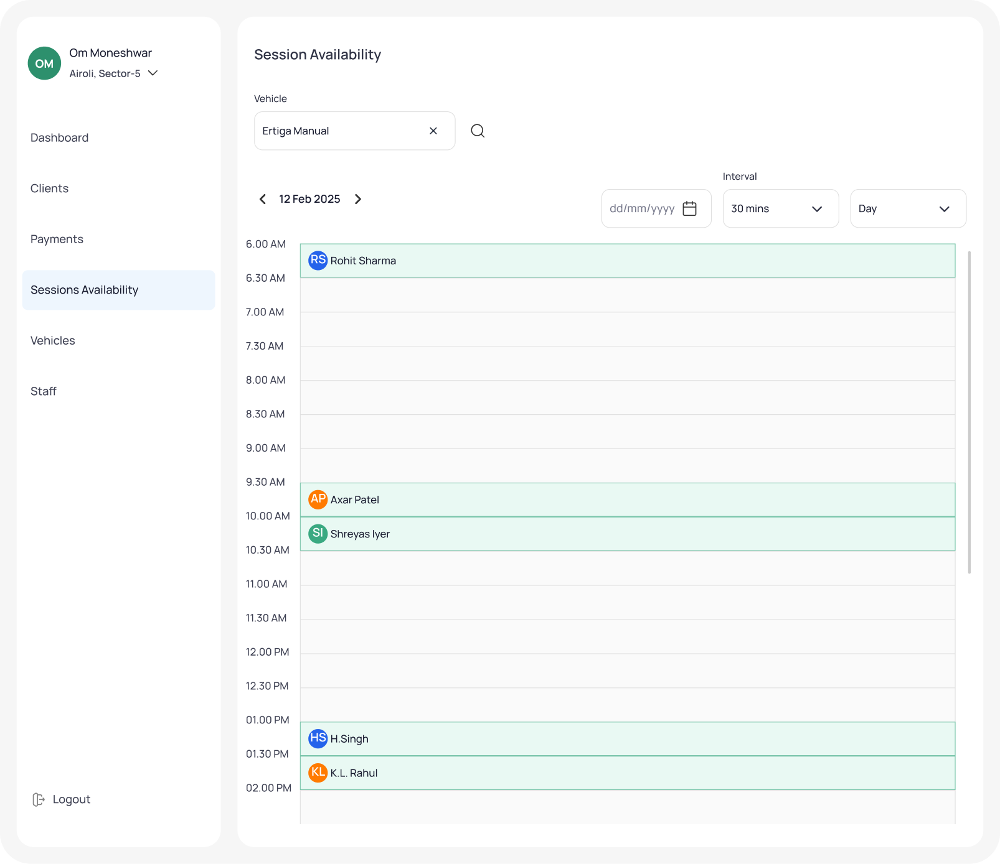

About 4 min read
Bridge
One app to run a driving school.
- Role
- Sole Product Designer
- Timeline
- 2024–2026
- Industry
- Software for driving schools
The short version
The problem
Small driving schools in India are often run by one person, who handles admissions, payments, lesson timings and vehicles using:
- Paper registers
- Phone calls
- Memory
Bridge started as a tool for one client of our agency, and I was the only designer on it, working alongside the founder and engineers from the first research to developer handoff.
What I did
I built the product around the three jobs an owner repeats most:
- Admissions
- Payments
- Scheduling
And I made the app remember details so nothing is typed twice. I also made the case to build for the school admin first, and leave student and instructor features for later.
What happened
Daily admin work dropped from roughly six hours to one or two.
Missed payments and forgotten follow-ups went down.
What began as a tool for one client became a subscription product with paying schools.
First, a little background
A driving school has a lot of small moving parts: who has joined, who has paid, which car is free at 7 AM, whose licence test is coming up. In most small schools, all of that lives in a register, a notebook and the owner’s head.
Bridge puts it in one place.
What I learned from watching admins work
I visited four or five driving schools around Mumbai and sat with the owners and admins as they worked, then backed that up with desk research. Three things stood out:
These users were comfortable with manual work, not with software. So the app had to make sense on day one, with nothing to learn.
Four decisions that shaped it
Make the everyday tasks the fastest ones
Admissions, payment tracking and scheduling got the shortest, simplest paths. Saving a few seconds on something you do twenty times a day matters more than a clever feature you use once a month.
Show today’s work, not charts
The home screen is a working view: what’s happening today, what’s pending, who needs a follow-up. An owner can scan it in under a minute.

Make the app remember
The same student details had to be written out again and again: at admission, for RTO paperwork (the Regional Transport Office issues driving licences), for the learner’s test and again for the final test. I designed admission around Aadhaar eKYC (identity verification using India’s national ID), so a student’s details fill in automatically in seconds and then carry over to every later form. That also removed a whole class of typing mistakes.

Stay narrow
After meeting the client, our founder came back with a long list of problems and good ideas for digitizing everything, for admins, instructors and students alike. My view was that if we built for everyone, we would build for no one.
So I sketched out how each role works, what each one needs, and how different those needs are. That made the case for solving one role at a time. We scoped the first version down to the admin, where the real bottleneck was, and kept the other roles for a later phase. That focus paid off for the business.
What I designed
Admission
Admission in four short steps: personal details, licence, plan and payment, mostly pre-filled. If a time slot is taken, the app suggests four free ones.



Students, payments and vehicles
Students, payments and vehicles in one place, including reminders for expiring vehicle insurance and pollution certificates.



Live schedule
A live schedule in half-hour slots, so the same car is never booked twice.

WhatsApp messages
Automatic WhatsApp messages for confirmations, reminders and offers, which used to depend on someone remembering to send them.
What changed
-
From roughly six hours to one or two
Admin time: daily admin work went from roughly six hours to one or two, by the admins’ own estimate. Checking status and updates now takes minutes.
-
Once
Type it once: details entered at admission fill in automatically for RTO documents, the learner’s test and the final test.
-
Fewer
Fewer slips: missed payments and forgotten follow-ups went down, and schools needed fewer people for admin work across branches.
From one client to a product
Bridge is now sold to other driving schools on subscription, with paying schools onboarded (exact numbers are under NDA).
WhatsApp automation
WhatsApp automation is shipped and in daily use.
We didn’t track these with analytics, so the figures are estimates from the people using it. Next time I would measure from day one.
What I took away
Admins never asked for new features. They wanted less friction in what they already did.
The gap was clarity, not capability.
Later in the project I brought AI tools into my process, to prototype faster and to refine workflows and visuals.